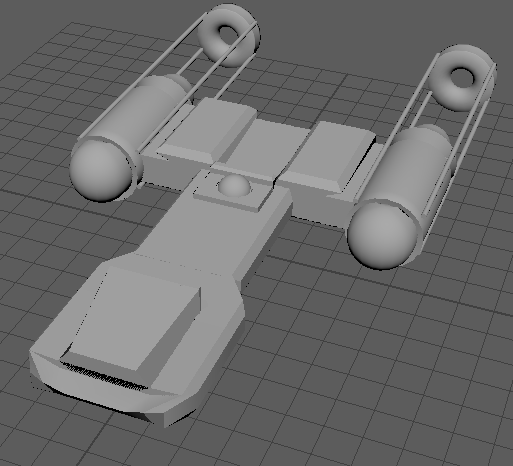
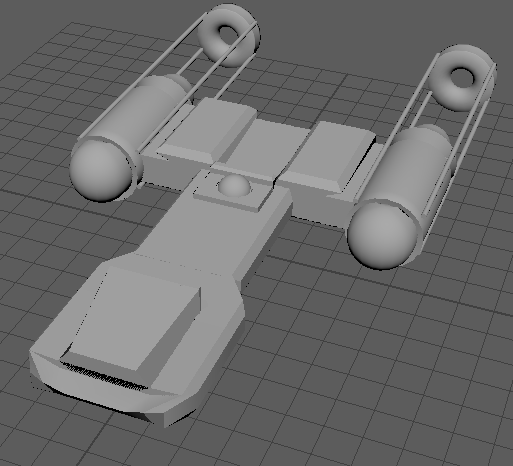

Well the answer is in the question, making models in three dimensions. This topic covers a surprisingly large area, from the video game industry to helping out in movies. The Mandolorian is filmed on a green screen and then cgi is used in the game engine Unreal to make it look right. So just how do you go about doing it, well the trick is finding a starting point, and that’s what is here a few things to help you get started as a modeler.
Maya homepage link Blender homepage link 
